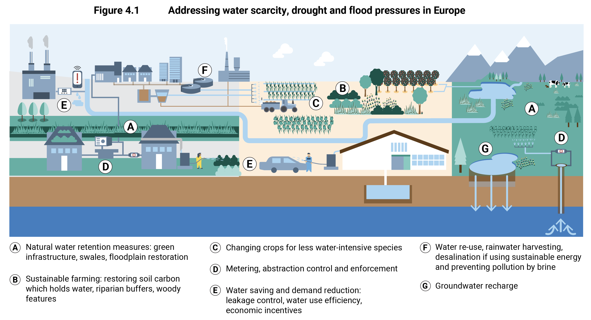

TL;DR: The world's food supply is at risk because many countries that produce our food are facing water shortages, a problem expected to worsen due to climate change. However, policymakers are still not adequately addressing the issue of desalination as a potential solution to the water crisis.
My friendly neighborhood climate reporter, Somini Sengupta (from my cultured meat installment 1 ), published another doom-and-gloom article. She may not appreciate the subtle implications of “conservation of mass,” but she seems to appreciate that water and food are connected. So, perhaps her Berkeley degree wasn’t entirely for naught.
The AI summary of the article is as follows:
The world's food supply is at risk because many of the countries that produce our food are facing water shortages. Studies show that many of the world's crops are grown in stressed or unreliable water supply areas. This problem is expected to worsen due to climate change.
The concentration of food production in just a few countries creates another risk. If these countries experience water shortages, it can have a major impact on global food prices.
Some possible solutions include reducing food waste, using water more efficiently, and setting sustainable water use targets.
I’m usually concerned when “studies show” something without connecting the dots. That’s not an AI brain fart. It’s in the article’s title, “Water Crises Threaten the World’s Ability to Eat, Studies Show”. But be that as it may—the issue is that “producing more water from the vast oceans that surround our continents” is not on the short list of possible solutions.
So, let’s look at these “studies” in more detail.
First, she cites The World Resources Institute , a $365M non-profit that releases the same report repeatedly as “news.” The report that Ms. Sengupta trumpets has basically the same take-home message I covered earlier 2 . It even has the same authors! I imagine that strategy to be similar to the campaign donation text messages that spam me with urgent updates, but it clearly got the attention of The New York Times climate staff.
Next, she cites The Global Commission on the Economics of Water , an organization I was unaware of. It appears to be only a couple of years old, but it released a very long and reasonably detailed analysis entitled “The Economics of Water: Valuing the Hydrological Cycle as a Global Common Good”. This report outlines a comprehensive plan to address the global water crisis. And it does cover desalination, albeit buried:
Affordable and energy-efficient desalination is part of the mix of solutions to achieve long-term water resilience. The innovations being explored include improved integration of renewable energy, better control of membrane fouling, and technologies that can work on the seabed, which reduce the impact of desalination on the marine environment and are less energy intensive. —Report, p. 131, Mission 5, Goal 4.
This source is worthwhile and one that I’ll need to digest further. The report does seem to have a scientific angle. However, I suspect that a startup NGO that proposes treating water as a common good will be a political and policy non-starter.
Finally, she cites a report by the European Environment Agency , part of the EU bureaucracy. Southern Europe (Spain, Italy, and Greece) is arid yet has access to the Mediterranean Sea. Yet, desalination (despite being actively pursued by these member states) is discounted chiefly as being an energy hog (dirty!) and producing brine waste (harms fish!). Given that the document starts by pointing to a Water Framework Directive goal intended to be met nine years ago yet remains unfulfilled, I suspect it’s another policy-heavy, science-light tome. It does come with a good figure that summarizes the situation, though:

I’m slightly less disappointed in Ms. Sengupta’s article because I learned something.
It’s been a hard week, so let’s leave it at that.